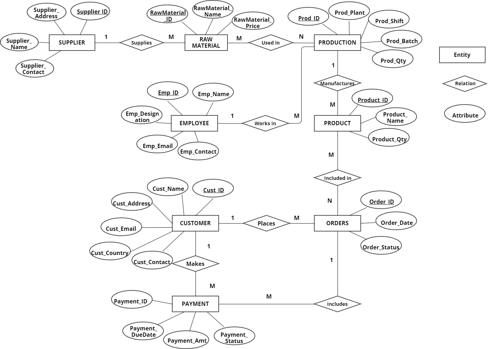
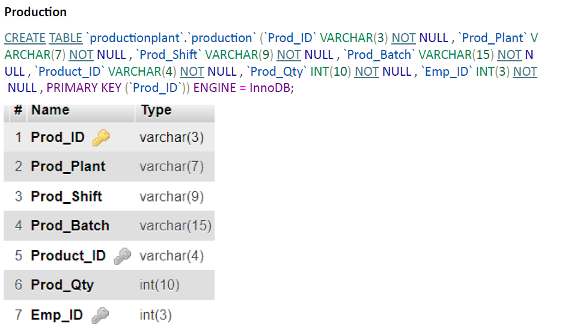

A SQL-based database system for managing chemical production plant operations
Course: COMP 230 – Databases and Database Management Systems
This project involved designing and implementing a relational database system to manage operations in a chemical production plant.
The system streamlined production batch scheduling, raw material inventory tracking, customer order processing, and payment management.
Built to support roles like plant managers, QA, and inventory teams, this project showcased end-to-end DBMS skills.
ERD showing structured connections between products, orders, materials, suppliers, and employees. 1. DDL for creating a table:
1. List all production batches along with the associated raw materials: 2. List the products ordered along with their order quantities and prices: 3. Show the details of product using the most expensive raw material: Overall, this project strengthened my practical skills in database design, normalization, and SQL optimization, while giving me hands-on experience in managing data integrity, implementing relational logic, and confidently translating business requirements into efficient, data-driven solutions.
Project Overview
Tools & Techniques
Key Features
Entity Relationship Diagram (ERD) Using Chen's Notation

Sample Queries

Results & Outcomes